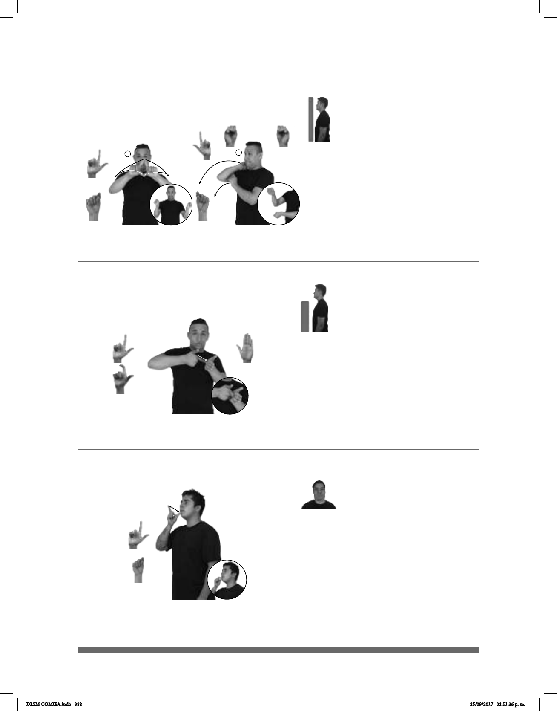

388
1
2
Seña: SC: I. SS; II. SB
I. Seña que pasa de L.1 a
I. Palmas hacia afuera; II. MD
palma hacia la izquierda. MB palma hacia
la derecha.
I. A la altura del pecho, del cen-
tro a los lados; II. MD a la altura del cuello.
MB a la altura del pecho.
I. Las manos parten de un
mismo punto y luego se abren hacia los
lados mientras los pulgares se retraen; II. La
MD y la MB se mueven formando un arco
hacia el frente simultáneamente.
sust. m. Herramienta para
excavar formada por un palo de madera en
uno de cuyos extremos lleva una barra de
acero terminada en punta.
Seña: SB
MD seña que pasa de
L.1 a L.10, MB B-P.2
MD palma hacia la
adentro, MB palma oblicua hacia la
izquierda y hacia arriba.
MD y MB a la altura del
pecho.
MD el dedo índice se
retrae.
Labios protrui-
dos.
sust. f. Instrumento que
proyecta un polímero sólido fundido
usualmente empleado como pegamento.
Seña: SM
Seña que pasa de L.1 a
Palma hacia la izquierda.
Sobre la boca.
Los dedos índice y
pulgar se tocan y se separan repetida-
mente.
1. sust. f. Cuerpo civil o
militar encargado de vigilar el orden
público, garantizar la seguridad de los
ciudadanos y perseguir a los delin-
cuentes de acuerdo con las leyes de un
Estado. 2. sust y adj. Miembro de dicho
cuerpo.
(L-142)
(L-143)
(L-144)
PICO USAR PARA #ORO PODER SACAR
El pico se usa para poder extraer oro.
pro-TÚ YA HACER ADORNOS NAVDIDAD PISTOLA-DE-SILICÓN
Hiciste los adornos navideños con una pistola de silicón.
MUCHOS POLICÍA
área
HABER MANIFESTACIÓN
allá
Hay muchos policías en la manifestación.
DLSM COMISA.indb 388 25/09/2017 02:51:36 p. m.